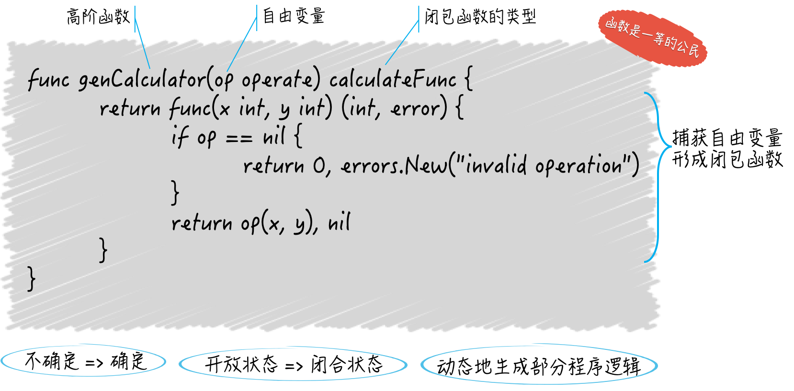

- 00 导读 写给0基础入门的Go语言学习者.md.html
- 00 导读 学习专栏的正确姿势.md.html
- 00 开篇词 跟着学，你也能成为Go语言高手.md.html
- 01 工作区和GOPATH.md.html
- 02 命令源码文件.md.html
- 03 库源码文件.md.html
- 04 程序实体的那些事儿（上）.md.html
- 05 程序实体的那些事儿（中）.md.html
- 06 程序实体的那些事儿 （下）.md.html
- 07 数组和切片.md.html
- 08 container包中的那些容器.md.html
- 09 字典的操作和约束.md.html
- 10 通道的基本操作.md.html
- 11 通道的高级玩法.md.html
- 12 使用函数的正确姿势.md.html
- 13 结构体及其方法的使用法门.md.html
- 14 接口类型的合理运用.md.html
- 15 关于指针的有限操作.md.html
- 16 go语句及其执行规则（上）.md.html
- 17 go语句及其执行规则（下）.md.html
- 18 if语句、for语句和switch语句.md.html
- 19 错误处理（上）.md.html
- 20 错误处理 （下）.md.html
- 21 panic函数、recover函数以及defer语句 （上）.md.html
- 22 panic函数、recover函数以及defer语句（下）.md.html
- 23 测试的基本规则和流程 （上）.md.html
- 24 测试的基本规则和流程（下）.md.html
- 25 更多的测试手法.md.html
- 26 sync.Mutex与sync.RWMutex.md.html
- 27 条件变量sync.Cond （上）.md.html
- 28 条件变量sync.Cond （下）.md.html
- 29 原子操作（上）.md.html
- 30 原子操作（下）.md.html
- 31 sync.WaitGroup和sync.Once.md.html
- 32 context.Context类型.md.html
- 33 临时对象池sync.Pool.md.html
- 34 并发安全字典sync.Map （上）.md.html
- 35 并发安全字典sync.Map (下).md.html
- 36 unicode与字符编码.md.html
- 37 strings包与字符串操作.md.html
- 38 bytes包与字节串操作（上）.md.html
- 39 bytes包与字节串操作（下）.md.html
- 40 io包中的接口和工具 （上）.md.html
- 41 io包中的接口和工具 （下）.md.html
- 42 bufio包中的数据类型 （上）.md.html
- 43 bufio包中的数据类型（下）.md.html
- 44 使用os包中的API （上）.md.html
- 45 使用os包中的API （下）.md.html
- 46 访问网络服务.md.html
- 47 基于HTTP协议的网络服务.md.html
- 48 程序性能分析基础（上）.md.html
- 49 程序性能分析基础（下）.md.html
- 尾声 愿你披荆斩棘，所向无敌.md.html
- 新年彩蛋 完整版思考题答案.md.html
- 捐赠
12 使用函数的正确姿势
在前几期文章中，我们分了几次，把Go语言自身提供的，所有集合类的数据类型都讲了一遍，额外还讲了标准库的container包中的几个类型。
在几乎所有主流的编程语言中，集合类的数据类型都是最常用和最重要的。我希望通过这几次的讨论，能让你对它们的运用更上一层楼。
从今天开始，我会开始向你介绍使用Go语言进行模块化编程时，必须了解的知识，这包括几个重要的数据类型以及一些模块化编程的技巧。首先我们需要了解的是Go语言的函数以及函数类型。
前导内容：函数是一等的公民
在Go语言中，函数可是一等的（first-class）公民，函数类型也是一等的数据类型。这是什么意思呢？
简单来说，这意味着函数不但可以用于封装代码、分割功能、解耦逻辑，还可以化身为普通的值，在其他函数间传递、赋予变量、做类型判断和转换等等，就像切片和字典的值那样。
而更深层次的含义就是：函数值可以由此成为能够被随意传播的独立逻辑组件（或者说功能模块）。
对于函数类型来说，它是一种对一组输入、输出进行模板化的重要工具，它比接口类型更加轻巧、灵活，它的值也借此变成了可被热替换的逻辑组件。比如，我在demo26.go文件中是这样写的：
package main
import "fmt"
type Printer func(contents string) (n int, err error)
func printToStd(contents string) (bytesNum int, err error) {
return fmt.Println(contents)
}
func main() {
var p Printer
p = printToStd
p("something")
}
这里，我先声明了一个函数类型，名叫Printer。
注意这里的写法，在类型声明的名称右边的是func关键字，我们由此就可知道这是一个函数类型的声明。
在func右边的就是这个函数类型的参数列表和结果列表。其中，参数列表必须由圆括号包裹，而只要结果列表中只有一个结果声明，并且没有为它命名，我们就可以省略掉外围的圆括号。
书写函数签名的方式与函数声明的是一致的。只是紧挨在参数列表左边的不是函数名称，而是关键字func。这里函数名称和func互换了一下位置而已。
函数的签名其实就是函数的参数列表和结果列表的统称，它定义了可用来鉴别不同函数的那些特征，同时也定义了我们与函数交互的方式。
注意，各个参数和结果的名称不能算作函数签名的一部分，甚至对于结果声明来说，没有名称都可以。
只要两个函数的参数列表和结果列表中的元素顺序及其类型是一致的，我们就可以说它们是一样的函数，或者说是实现了同一个函数类型的函数。
严格来说，函数的名称也不能算作函数签名的一部分，它只是我们在调用函数时，需要给定的标识符而已。
我在下面声明的函数printToStd的签名与Printer的是一致的，因此前者是后者的一个实现，即使它们的名称以及有的结果名称是不同的。
通过main函数中的代码，我们就可以证实这两者的关系了，我顺利地把printToStd函数赋给了Printer类型的变量p，并且成功地调用了它。
总之，“函数是一等的公民”是函数式编程（functional programming）的重要特征。Go语言在语言层面支持了函数式编程。我们下面的问题就与此有关。
今天的问题是：怎样编写高阶函数？
先来说说什么是高阶函数？简单地说，高阶函数可以满足下面的两个条件：
1. 接受其他的函数作为参数传入；- 2. 把其他的函数作为结果返回。
只要满足了其中任意一个特点，我们就可以说这个函数是一个高阶函数。高阶函数也是函数式编程中的重要概念和特征。
具体的问题是，我想通过编写calculate函数来实现两个整数间的加减乘除运算，但是希望两个整数和具体的操作都由该函数的调用方给出，那么，这样一个函数应该怎样编写呢。
典型回答
首先，我们来声明一个名叫operate的函数类型，它有两个参数和一个结果，都是int类型的。
type operate func(x, y int) int
然后，我们编写calculate函数的签名部分。这个函数除了需要两个int类型的参数之外，还应该有一个operate类型的参数。
该函数的结果应该有两个，一个是int类型的，代表真正的操作结果，另一个应该是error类型的，因为如果那个operate类型的参数值为nil，那么就应该直接返回一个错误。
顺便说一下，函数类型属于引用类型，它的值可以为
nil，而这种类型的零值恰恰就是nil。
func calculate(x int, y int, op operate) (int, error) {
if op == nil {
return 0, errors.New("invalid operation")
}
return op(x, y), nil
}
calculate函数实现起来就很简单了。我们需要先用卫述语句检查一下参数，如果operate类型的参数op为nil，那么就直接返回0和一个代表了具体错误的error类型值。
卫述语句是指被用来检查关键的先决条件的合法性，并在检查未通过的情况下立即终止当前代码块执行的语句。在Go语言中，if 语句常被作为卫述语句。
如果检查无误，那么就调用op并把那两个操作数传给它，最后返回op返回的结果和代表没有错误发生的nil。
问题解析
其实只要你搞懂了“函数是一等的公民”这句话背后的含义，这道题就会很简单。我在上面已经讲过了，希望你已经清楚了。我在上一个例子中展示了其中一点，即：把函数作为一个普通的值赋给一个变量。
在这道题中，我问的其实是怎样实现另一点，即：让函数在其他函数间传递。
在答案中，calculate函数的其中一个参数是operate类型的，而且后者就是一个函数类型。在调用calculate函数的时候，我们需要传入一个operate类型的函数值。这个函数值应该怎么写？
只要它的签名与operate类型的签名一致，并且实现得当就可以了。我们可以像上一个例子那样先声明好一个函数，再把它赋给一个变量，也可以直接编写一个实现了operate类型的匿名函数。
op := func(x, y int) int {
return x + y
}
calculate函数就是一个高阶函数。但是我们说高阶函数的特点有两个，而该函数只展示了其中一个特点，即：接受其他的函数作为参数传入。
那另一个特点，把其他的函数作为结果返回。这又是怎么玩的呢？你可以看看我在demo27.go文件中声明的函数类型calculateFunc和函数genCalculator。其中，genCalculator函数的唯一结果的类型就是calculateFunc。
这里先给出使用它们的代码。
x, y = 56, 78
add := genCalculator(op)
result, err = add(x, y)
fmt.Printf("The result: %d (error: %v)\n", result, err)
你可以自己写出calculateFunc类型和genCalculator函数的实现吗？你可以动手试一试
知识扩展
问题1：如何实现闭包？
闭包又是什么？你可以想象一下，在一个函数中存在对外来标识符的引用。所谓的外来标识符，既不代表当前函数的任何参数或结果，也不是函数内部声明的，它是直接从外边拿过来的。
还有个专门的术语称呼它，叫自由变量，可见它代表的肯定是个变量。实际上，如果它是个常量，那也就形成不了闭包了，因为常量是不可变的程序实体，而闭包体现的却是由“不确定”变为“确定”的一个过程。
我们说的这个函数（以下简称闭包函数）就是因为引用了自由变量，而呈现出了一种“不确定”的状态，也叫“开放”状态。
也就是说，它的内部逻辑并不是完整的，有一部分逻辑需要这个自由变量参与完成，而后者到底代表了什么在闭包函数被定义的时候却是未知的。
即使对于像Go语言这种静态类型的编程语言而言，我们在定义闭包函数的时候最多也只能知道自由变量的类型。
在我们刚刚提到的genCalculator函数内部，实际上就实现了一个闭包，而genCalculator函数也是一个高阶函数。
func genCalculator(op operate) calculateFunc {
return func(x int, y int) (int, error) {
if op == nil {
return 0, errors.New("invalid operation")
}
return op(x, y), nil
}
}
genCalculator函数只做了一件事，那就是定义一个匿名的、calculateFunc类型的函数并把它作为结果值返回。
而这个匿名的函数就是一个闭包函数。它里面使用的变量op既不代表它的任何参数或结果也不是它自己声明的，而是定义它的genCalculator函数的参数，所以是一个自由变量。
这个自由变量究竟代表了什么，这一点并不是在定义这个闭包函数的时候确定的，而是在genCalculator函数被调用的时候确定的。
只有给定了该函数的参数op，我们才能知道它返回给我们的闭包函数可以用于什么运算。
看到if op == nil {那一行了吗？Go语言编译器读到这里时会试图去寻找op所代表的东西，它会发现op代表的是genCalculator函数的参数，然后，它会把这两者联系起来。这时可以说，自由变量op被“捕获”了。
当程序运行到这里的时候，op就是那个参数值了。如此一来，这个闭包函数的状态就由“不确定”变为了“确定”，或者说转到了“闭合”状态，至此也就真正地形成了一个闭包。
看出来了吗？我们在用高阶函数实现闭包。这也是高阶函数的一大功用。

（高阶函数与闭包）
那么，实现闭包的意义又在哪里呢？表面上看，我们只是延迟实现了一部分程序逻辑或功能而已，但实际上，我们是在动态地生成那部分程序逻辑。
我们可以借此在程序运行的过程中，根据需要生成功能不同的函数，继而影响后续的程序行为。这与GoF设计模式中的“模板方法”模式有着异曲同工之妙，不是吗？
问题2：传入函数的那些参数值后来怎么样了？
让我们把目光再次聚焦到函数本身。我们先看一个示例。
package main
import "fmt"
func main() {
array1 := [3]string{"a", "b", "c"}
fmt.Printf("The array: %v\n", array1)
array2 := modifyArray(array1)
fmt.Printf("The modified array: %v\n", array2)
fmt.Printf("The original array: %v\n", array1)
}
func modifyArray(a [3]string) [3]string {
a[1] = "x"
return a
}
这个命令源码文件（也就是demo28.go）在运行之后会输出什么？这是我常出的一道考题。
我在main函数中声明了一个数组array1，然后把它传给了函数modify，modify对参数值稍作修改后将其作为结果值返回。main函数中的代码拿到这个结果之后打印了它（即array2），以及原来的数组array1。关键问题是，原数组会因modify函数对参数值的修改而改变吗？
答案是：原数组不会改变。为什么呢？原因是，所有传给函数的参数值都会被复制，函数在其内部使用的并不是参数值的原值，而是它的副本。
由于数组是值类型，所以每一次复制都会拷贝它，以及它的所有元素值。我在modify函数中修改的只是原数组的副本而已，并不会对原数组造成任何影响。
注意，对于引用类型，比如：切片、字典、通道，像上面那样复制它们的值，只会拷贝它们本身而已，并不会拷贝它们引用的底层数据。也就是说，这时只是浅表复制，而不是深层复制。
以切片值为例，如此复制的时候，只是拷贝了它指向底层数组中某一个元素的指针，以及它的长度值和容量值，而它的底层数组并不会被拷贝。
另外还要注意，就算我们传入函数的是一个值类型的参数值，但如果这个参数值中的某个元素是引用类型的，那么我们仍然要小心。
比如：
complexArray1 := [3][]string{
[]string{"d", "e", "f"},
[]string{"g", "h", "i"},
[]string{"j", "k", "l"},
}
变量complexArray1是[3][]string类型的，也就是说，虽然它是一个数组，但是其中的每个元素又都是一个切片。这样一个值被传入函数的话，函数中对该参数值的修改会影响到complexArray1本身吗？我想，这可以留作今天的思考题。
总结
我们今天主要聚焦于函数的使用手法。在Go语言中，函数可是一等的（first-class）公民。它既可以被独立声明，也可以被作为普通的值来传递或赋予变量。除此之外，我们还可以在其他函数的内部声明匿名函数并把它直接赋给变量。
你需要记住Go语言是怎样鉴别一个函数的，函数的签名在这里起到了至关重要的作用。
函数是Go语言支持函数式编程的主要体现。我们可以通过“把函数传给函数”以及“让函数返回函数”来编写高阶函数，也可以用高阶函数来实现闭包，并以此做到部分程序逻辑的动态生成。
我们在最后还说了一下关于函数传参的一个注意事项，这很重要，可能会关系到程序的稳定和安全。
一个相关的原则是：既不要把你程序的细节暴露给外界，也尽量不要让外界的变动影响到你的程序。你可以想想这个原则在这里可以起到怎样的指导作用。
思考题
今天我给你留下两道思考题。
complexArray1被传入函数的话，这个函数中对该参数值的修改会影响到它的原值吗？- 函数真正拿到的参数值其实只是它们的副本，那么函数返回给调用方的结果值也会被复制吗？
© 2019 - 2023 Liangliang Lee. Powered by gin and hexo-theme-book.